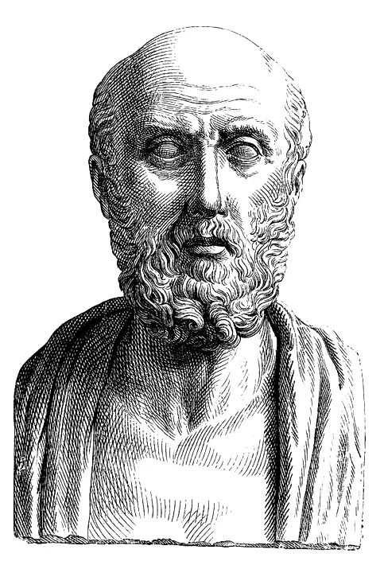
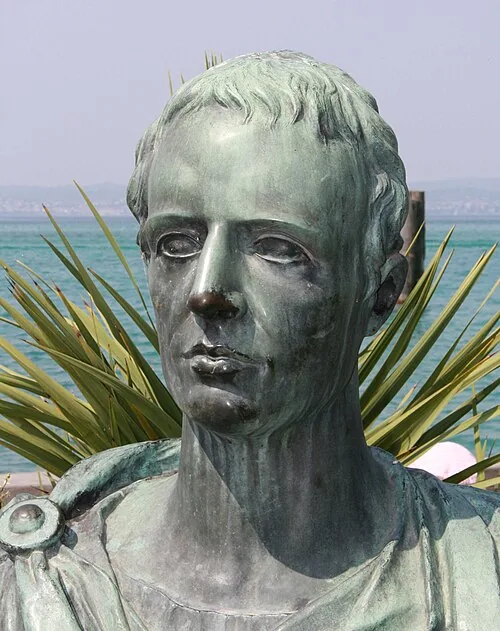
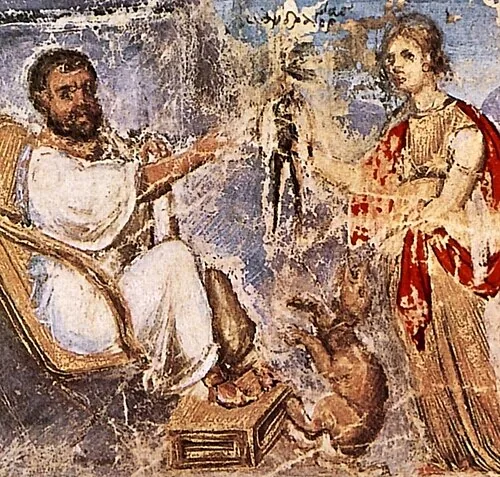

Authors and authorial attributions of the primary passages currently indexed for silphium. Select a work to return to its record.
Dates are approximate. The images are later representations, identified and credited with each entry.
-
01

c. 484–c. 425 BCE
History · Greek
Historian from Halicarnassus. Book 4 of the Histories places the silphium country among the peoples of Libya.
Image ↗ Roman copy of a Greek bust, second century CE. Metropolitan Museum of Art · CC0.
-
02

late 5th–4th c. BCE
Medicine · Greek · composite authorship
A collection of medical treatises by multiple authors. Diseases IV discusses attempts to cultivate Libyan silphium in Ionia and the Peloponnese.
Image ↗ Later engraving of Hippocrates, the corpus’s traditional namesake; the author of Diseases IV is unknown. Unidentified engraver · public domain.
-
03
c. 371–c. 287 BCE
Botany · Greek
Greek philosopher and naturalist. Enquiry into Plants records the form, harvesting, range, and reported cultivation of silphium.
Image ↗ Modern statue at Palermo Botanical Garden. tato grasso / Singinglemon · CC BY-SA 2.5.
-
04
c. 254–184 BCE
Comedy · Latin
Roman comic playwright. In Rudens, a character invokes a hoped-for silphium harvest and a shipment to Capua.
Image ↗ Imagined portrait engraved in 1770. Pierre François Barrois · public domain.
-
05

c. 84–c. 54 BCE
Poetry · Latin
Roman poet of the late Republic. Poem 7 uses silphium-bearing Cyrene as a point of comparison.
Image ↗ Twentieth-century bust at Sirmione. Schorle · CC BY-SA 3.0.
-
06
64/63 BCE–c. 24 CE
Geography · Greek
Greek geographer from Amaseia. Geography 17 describes a long, narrow silphium-producing region south of Cyrenaica.
Image ↗ Imagined portrait engraved by André Thévet in 1584. André Thévet · public domain.
-
07

23/24–79 CE
Natural history · Latin
Roman encyclopedist. Two passages in Natural History discuss scarcity of Cyrenaic silphium, imported resin, and medicinal uses.
Image ↗ Nineteenth-century imagined portrait, published in 1859. Geoffrey · public domain.
-
08

fl. c. 50–70 CE
Medicine · Greek
Greek physician and pharmacological author. De materia medica 3.80 compares silphium and resin from Libya and eastern regions.
Image ↗ Dioscorides depicted in the Vienna Dioscurides manuscript, c. 512 CE. Unknown artist · public domain.
-
09

c. 373–c. 413/414 CE
Letters · Greek
Writer and later bishop in Cyrenaica. Two letters mention a garden plant called silphium and a gift of its juice.
Image ↗ Imagined portrait engraved for André Thévet’s 1584 collection. British Museum / André Thévet · public domain.
Bibliography
Studies cited
- 01Suzanne Amigues, “Le silphium — État de la question,” Journal des Savants (2004), 191–226. ↗
- 02Lisa Briggs and Jens Jakobsson, “Searching for Silphium: An Updated Review,” Heritage 5 (2022), 936–955. ↗
- 03Ken Parejko, “Pliny the Elder’s Silphium: First Recorded Species Extinction,” Conservation Biology 17 (2003), 925–927. ↗
- 04Denis Roques, “Synésios de Cyrène et le Silphion de Cyrénaïque,” Revue des Études Grecques 97 (1984), 218–231. ↗
.jpg)

.jpg)